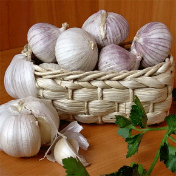
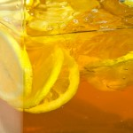
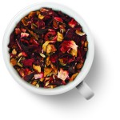
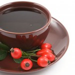
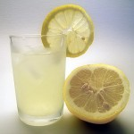
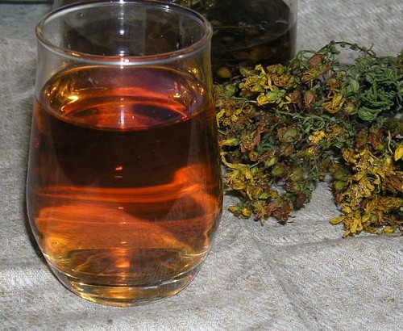

Что такое омолаживающие напитки

|
Всевозможные эликсиры бессмертия,
молодости и здоровья, рецепты живой и мертвой воды много веков пытались
найти знахари и алхимики многих стран. Чего только не добавляли они в
состав зелья для омоложения: и лекарственные растения, и драгоценные
камни, и чеснок, и даже яды... 15 продуктов продлевающих жизнь 15 продуктов продлевающих жизнь Представляем перечень продуктов, которые продлевают жизнь Малина В малине содержится антоциан (растительный пигмент), который поддерживает выработку инсулина и контролирует уровень сахара в крови, тем самым защищая от диабета. Защита от рака кишечника Зеленый или белый чай Одна чашка в день в два раза снижает риск заболевания раком кишечника. Антиоксиданты, содержащиеся в чае, называемые катехинами, подавляют развитие раковых клеток. Защита кожи Морковка Ученые Национального института по исследованиям раковых заболеваний США обнаружили, что у людей, потребляющих большое количество каротина (пигменты, содержащиеся в морковке), в 6 раз меньше вероятность развития рака кожи. Защита для сердца Лосось Потребление естественных жиров, например, в лососе или оливковом масле, повышает уровень холестерина ЛВП. Кроме того, в лососе содержится большое количество жирных кислот омега-3, которые предотвращают сердечно-сосудистые заболевания. Защита костей Креветки Креветки богаты на витамин В12, который делает кости более прочными и играет важную роль в развитии новых клеток. Кроме этого, креветки являются источником витамина D, важного ингредиента в составе костей. Защита от рака груди Цельное зерно Согласно исследованию, женщины, получающие не менее 30 г цельного зерна в день, в 2 раза меньше предрасположены к заболеванию рака легких. Чашка каши с черникой - лучшая защита от рака груди. Контроллер кровяного давления Вареный картофель Потребление калия (достаточно 400 г вареного картофеля, но обязательно картофель есть со шкуркой!) существенно снижает кровяное давление. Лучшая защита для зубов Твердый сыр Исследователи обнаружили, что 10 г сыра Чеддер, Гауда или Моцарелла в день снижает уровень рН, что предотвращает появление повреждений зубов. Лучший защитник зрения Шпинат или салат-латук Национальный институт здоровья выяснил, что у тех, кто потребляет лютеин (найденный в зелени), на 43% меньше вероятность дегенерации желтого пятна. Эликсир молодости Красное вино Окислительный стресс играет главную роль в старении, а антиоксиданты в красном вине, резерватролы, помогают продлить жизнь, путем нейтрализации болезнетворных свободных радикалов. Пино Нуар: в одном стакане этого вина содержится больше всего резерватрола. Восстановление волос Говядина Железо в мясе стимулирует обновление и восстановление волос. Кроме того, говядина богата на цинк, предотвращающий выпадение волос. Защита от рака простаты Чеснок Компоненты, находящиеся в чесноке, снижают вероятность заболевания раком простаты на 50%. Защита от рака легких Грейпфрут Грейпфрут в день снижает развитие рака легких на 50%. В грейпфруте содержится нарингин, который помогает снизить уровень энзимов, провоцирующих развитие раковых клеток. Контроль уровня холестерина Оливковое масло Антиоксиданты, содержащиеся в оливковом масле, повышают уровень холестерина ЛВП (хорошего) и понижают уровень холестерина ЛНП (плохого). А также оливковое масло является отличной защитой против сердечно-сосудистых заболеваний. Лучший стимулятор работы мозга Кофе Кроме того, что кофе дает заряд бодрости на 90 минут, чашка кофе по утрам - источник антиоксидантов, которые предотвращают развитие болезни Альцгеймера более чем на 60%. Чесночная шелуха продлевает молодость  Когда вы кушаете чеснок, не выбрасывайте белую шелуху, а собирайте её и храните. Это ценнейшее средство для продления молодости. Для этого каждый месяц надо пить напиток, приготовленный из белой шелухи чеснока. Этот напиток очень прост в приготовлении: надо взять горсть шелухи белого чеснока и залить её стаканом кипятка. После того, как чайник вскипит, надо подождать от 1 до 3 минут, и только потом залить водой шелуху. Пить целебный напиток можно только после того, как вода в стакане совсем остынет, это примерно через 6-8 часов. Нельзя ни в коем случае пить горячий или даже слегка теплый напиток. В один день надо выпить 4 стакана целебного напитка. Его можно приготовить заранее, потому что обычно напиток долго остывает. Мужчины должны пить напиток из белой шелухи чеснока с 10 по 20 числа любого месяца. А женщины могут это делать с 20 по 30 число. Ваша кожа скоро станет идеальной. Так что белую шелуху не выбрасывайте, а собирайте её. Она вам очень пригодятся для приготовления чудесной воды. Рецепты молодости и красоты Чай молодости и красоты Регулярно пейте чай из листьев малины, шиповника и земляники. Этот напиток стимулирует выработку главного гормона молодости и красоты - эстрогена. Он отвечает за кровоснабжение кожи, нормализует синтез коллагена и поддерживает оптимальный уровень влажности. "Эликсир молодости" Это средство от одышки и для омоложения крови, особенно у тучных, вялых людей. Размолоть 1 фунт чеснока. Выжать сок из 24 лимонов. Размолотый чеснок и лимонный сок налить в банку с широким горлом, поставить банку на 24 дня, завязав сверху легкой, прозрачной тряпочкой. При приеме взбалтывать. Доза: принимать один раз в день перед сном одну чайную ложку этой смеси на полстакана воды. По истечении 10-14 дней человек почувствует отсутствие одышки и усталости, и пользующийся этим чудесным средством будет награжден хорошим сном. По преданиям и семейным записям, этому средству не меньше 500 лет! Эликсир долголетия Измельчите в кофемолке 100 г цветков ромашки, 100 г травы зверобоя, 100 г цветков бессмертника и 100 г березовых почек. Тщательно перемешайте и пересыпьте в банку с плотно закручивающейся крышкой. Ежедневно заваривайте 1 ст. ложку смеси 0,5 л кипятка. Настаивайте 20 минут. Процедите. Принимайте в теплом виде по 1 стакану с добавлением чайной ложки меда 2 раза в день: утром натощак за 20 минут до еды и вечером перед сном через 2 часа после еды (после этого вечером больше ничего не есть и не пить). Курс проводить раз в 5 лет. Он способствует похуданию, усилению обмена веществ, очищению организма от шлаков, улучшению работы сердца, печени, почек и поджелудочной железы, а также повышает эластичность сосудов, предупреждает развитие склероза, инфаркта и гипертонии. Молодильный сбор Измельчить в мясорубке по 100 г травы бессмертника, зверобоя, березовых почек, 200 г цветов ромашки. Все перемешать и уложить в стеклянную банку, закрыть крышкой. Вечером перед сном столовую ложку сбора залить 0,5 литра кипятка и настаивать 20 минут, затем процедить через ткань (не марлю или ситечко!). Выпить стакан теплого настоя, добавив в него чайную ложку меда. После этого уже ничего не есть и не пить. Утром допить оставшийся настой, предварительно нагрев его и добавив мед. Завтрак через час. Принимать, пока не закончится содержимое банки. Следующий курс - через 5 лет. Этот сбор омолаживает, улучшает зрение, нормализует сердечную деятельность и давление. Молодость из шишки Люди приспособились собирать сосновую пыльцу, которая зарекомендовала себя как средство, предохраняющее организм от преждевременного старения. Собирать пыльцу рекомендуется из шишек до ее осыпания. С этой целью собирают желтые шишки сосны, сушат их на солнце, вытряхивают из них пыльцу, просеивают ее через густое сито, вновь просушивают и хранят в сухом прохладном месте в бумажных мешочках. Заготовленную таким образом пыльцу принимают по 1 г 2-3 раза в день до еды. Восточный эликсир молодости 100 мл лимонного сока 200 г меда 50 мл оливкового масла Смешайте все компоненты и принимайте натощак по чайной ложке. В тех же пропорциях (1:2:0,5) можно готовить эликсир малыми порциями каждое утро: 1 чайная ложка свежевыжатого лимонного сока 2 чайных ложки меда 0,5 чайной ложки оливкового масла Употребляя это средство, вы будете молодеть на глазах: улучшится цвет лица, заблестят глаза, разгладится кожа, а также - улучшится пищеварение и вы никогда не узнаете, что такое склероз. ВОСТОЧНЫЙ ЭЛИКСИР МОЛОДОСТИ Состав: - 100 мл. лимонного сока. - 200 г меда. - 50 мл. оливкового масла. Смешайте все компоненты и принимайте эликсир натощак по одной чайной ложке. Помимо того, что употребляя это средство вы будете молодеть на глазах (улучшится цвет лица, заблестят глаза, разгладится кожа),вы избавитесь от запоров(если таковыми страдаете) и никогда не узнаете ,что такое склероз. Будьте молоды и здоровы! http://malahov-plus.com ПЕРЕД ПРИМЕНЕНИЕМ ЛЮБОГО ПРЕПАРАТА,СРЕДСТВА ИЛИ МЕТОДА ОБЯЗАТЕЛЬНО КОНСУЛЬТИРУЙТЕСЬ С ЛЕЧАЩИМ ВРАЧОМ! МОЛОДОСТЬ ВЕРНЕТ ВОДА Глядя ежедневно в зеркало, не замечаешь, как меняешься. Но на фотографии вдруг с ужасом обнаруживаешь, что годы летят, и вид с каждым улетевшим все менее и менее цветущий. Особенно если тебе за 40. Надо что-то делать, чтобы вернуться к прежнему цветущему виду. Существует такая наука - биоритмология, в которой исследуются годовой и суточный ритм работы внутренних органов. Было замечено, что с 3 до 5 утра работают почки. Толстый кишечник работает с 5 до 7, желудок - с 7 до 9, селезенка - с 9 до 11, с 11 до 13 - сердце, с 13 до 15 - тонкий кишечник, с 15 до 17 - мочевой пузырь. А вот с 17 до 23 часов практически никакие внутренние органы не работают. Значит, эти часы и являются оптимальным временем приема пищи. Утром человек должен принимать обычную воду, так как работают почки и кишечник, которые выводят токсические вещества. Чай, кофе, лимонады не могут заменить воду, так как теплое питье всасывается в кишечник, снижая ферментацию и блокируя процесс очищения, а в лимонадах много вредных добавок. Полезно пить воду со льдом. Все долгожители утром не едят. Они пьют холодную родниковую воду, часто - текущую с ледников. Ворсиночки желудка работают как в насосе: всасывают питательные вещества, выделяют желудочный сок. Если утром нет пищи в желудке, то идет процесс очищения организма. Вся жидкость, выпитая утром, выводится из организма, очищая его. Жидкость, выпитая вечером, остается в организме, вызывая отеки. Кипяченую воду организм не усваивает, поэтому нужно пить сырую. В городах вода обычно загрязнена и ее надо очищать - либо при помощи фильтров-очистителей, либо при помощи целебной глины (1-2 ч.л. на стакан воды). Полезно пить талую воду. Для этого вода замораживается в холодильнике. Небольшую часть замерзшей воды (в ней остаются все ненужные примеси) вымывают холодной водой из-под крана. При таянии оставшуюся часть воды можно пить. Если нет никакой возможности очистить воду, то употребляют кипяченую с добавлением меда, яблочного уксуса или лимонного сока. Натощак утром выпивайте не менее 2 стаканов холодной воды и 2-3 стакана воды с медом в течение двух часов. Если организм приучен к обильному завтраку, постепенно смещайте время завтрака и заменяйте его приемом воды с медом, свежими фруктами и овощами. Обед можно заменить сырой растительной пищей: цельными фруктами и овощами или сырыми растительными салатами. Зимой - сухофруктами, изюмом, курагой, черносливом, предварительно замочив их в воде. Очень полезна зелень, особенно красная лебеда, листья красной свеклы, крапива, амарант. Листья нужно перекрутить на кофемолке и добавлять в воду (зимой можно употреблять сушеные листья, измельчив их на кофемолке). Трава добавляется в холодную воду, тогда она очищает кишечник. А вот отвар травы, компоты и сладкие соки всасываются в кишечник. Красный пигмент, имеющийся в листьях и плодах, улучшает состав крови. Полезны листья яблони, смородины, чеснока, мальвы. Клетки, очищенные водой, получают питание от натуральных продуктов, сохранивших свои биоэнергетические свойства, и идет процесс омоложения. Если хотите похудеть, внушите себе, что в первой половине дня нужно только пить, но не есть, а вот во второй половине дня - наоборот: нужно только есть, но ни в коем случае не пить. Перед основным приемом еды необходимо наполнить желудок большим количеством рубленой зелени, овощей и фруктов летом, а зимой фруктовыми или яблочными сорбентами (порошками, приготовленными из сухофруктов). Для этого яблоки или абрикосы нужно досушить на батарее, пока они не станут ломкими, и перекрутить на кофемолке. Их можно принимать утром и в обед: 3-4 ст. л. залить водой и выпить. Такое питье утоляет голод и способствует похудению. Если голод все же не утолен, можно еще раз повторить такое питье, увеличив дозу порошка, или жевать сухофрукты, предварительно замочив их на 3-4 часа. Сухофрукты можно сушить самим или покупать на базаре. Не следует покупать копченый чернослив (нужен только сушеный) и ярко-оранжевые абрикосы (в них добавлены консерванты). Абрикосы должны быть темного цвета. И еще одно замечание: покупая зелень на базаре, обратите внимание на лицо хозяйки, ведь она питается продуктами со своего огорода. Если лицо у нее цветущее, можно смело покупать продукты, в них нет или очень мало химикатов. Эликсир из одуванчиков Каждую весну на своих участках дачники начинают упорную борьбу с одуванчиками. А цветы растут и растут, появляясь то на грядках, то на газонах, то на дорожках. Уничтожают их как вредные и надоевшие сорняки, доставляющие массу хлопот А зря! Это растение обладает чудодейственными свойствами и используется в народной медицине "от вершков до корешков", потому что целебны и цветки, и бутоны, и листья, и корни, и даже горький белый сок, нещадно пачкающий наши руки. Существуют культурные сорта одуванчика, во Франции он выращивается как овощ-деликатес и лекарственное растение. У культивируемых сортов листья достигают длины 50 см и более. Как овощ его выращивают в затемненном парнике - тогда листья вырастают белыми, но сочными, без горечи. Дикий одуванчик тоже можно использовать как пищевое растение. Его поджаренные корни употребляют в качестве суррогата кофе, а молодые листья - в виде весеннего витаминного салата, улучшающего обмен веществ. Для уничтожения горечи в молодых листьях одуванчика их на полчаса кладут в соленую воду, затем промывают, режут, добавляют измельченный зеленый лук, соль. Заправляют сметаной, майонезом или растительным маслом, посыпают петрушкой и укропом. В соцветиях и листьях одуванчика содержится большое количество витаминов С, В1, В2, Е и других полезных веществ. Водный настой корней вместе с листьями возбуждает аппетит, улучшает пищеварение, тонизирует организм, активизирует обмен веществ. Все части растения применяются для заварки травяных чаев - профилактических и лечебных. Кроме того, из одуванчика нетрудно приготовить поистине чудесный эликсир, который поможет снять усталость, улучшит аппетит, повысит жизненный тонус. Рано утром сорвите распустившиеся соцветия и сразу уложите в трехлитровую банку. Слой соцветий (3-4 см) чередуйте со слоем (1-2 см) сахарного песка. Когда банка заполнится до половины, осторожно все утрамбуйте и добавьте 100 мл холодной кипяченой воды. Через несколько дней получится вытяжка - буроватого цвета, приятная на вкус. Ее следует принимать по 1 ч. ложке, добавляя в чай или другие напитки. Наконец, варенье. Оно особенно полезно для пожилых и ослабленных людей, поэтому не поленитесь и приготовьте для себя и своих близких это вкусное лекарство. Исходные продукты: примерно 1000 цветков, 2 кг сахарного песка, 3 лимона, 25 свежих вишневых листьев. Перед варкой цветы одуванчика, вишневые листья и натертые на терке лимоны прокипятите в 1 л воды и дайте настояться в течение суток. Потом растолките смесь до получения кашицы, перелейте ее в эмалированную кастрюлю и поставьте на огонь. Когда вода закипит, добавьте сахар и варите еще два часа, периодически убирая пену. Варенье по густоте и цвету будет похоже на мед. УНИКАЛЬНЫЕ РЕЦЕПТЫ ДЛЯ ДОЛГОЛЕТИЯ“Старости надо сопротивляться … Как борются с болезнью, так надо бороться и со старостью : следить за своим здоровьем, есть и пить столько, сколько нужно для восстановления сил, а не для их угнетения”. Марк Тулий Цицерон СОК ДОЛГОЛЕТИЯ 
ЧАЙ НАСТОЯЩИХ ГОРЦЕВ Залейте 25г корня фенхеля, 1л кипятка, прокипятите 2 мин. и дайте настояться 10 мин. Пейте по 3 чашки этого напитка в день. Или залейте 1 чайную ложку измельченных плодов фенхеля 1ст.кипятка. дайте настояться 2 часа в закрытой посуде, затем процедите и пейте по 1 ст.л 4 раза в день за 20 мин до еды.
ЕГИПЕТСКИЙ ЧАЙ 
РЕЦЕПТ МОЛОДОСТИ ДРЕВНИХ ВИКИНГОВ 
ЧАЙ С КРАСНОЙ РЯБИНОЙ Этот напиток ценится из-за его омолаживающего свойства. Смешайте в равных частях сушенные плоды красной рябины и шиповника, измельчите в кофемолке и заваривайте как чай, по чайной ложке на стакан кипятка. Напиток полезен не только взрослым, но и детям, он стимулирует память и улучшает работу мозга.
ГРЕЧЕСКИЙ ЭЛИКСИР МОЛОДОСТИ 
Тибетская питьевая вода
Положить в стеклянную банку горный
хрусталь, дымчатый и розовый кварц, аметист, кахолонг и сердолик, залить
кипяченой водой, поставить на 8?10 часов на солнце. Такая вода
омолаживает, придает жизненный тонус и служит профилактикой различных
заболеваний. Принимают ее ежедневно по 2-3 стакана, используют наружно
для протираний, примочек, компрессов для смягчения кожи, придания ей
эластичности, разглаживания морщинок, а также при порезах, ушибах,
ожогах.
Напиток тибетских монахов
Это старинное средство монахи делали
из смеси ромашки, бессмертника и березовых почек, взятых в равных
частях. Сбор заливали кипятком, недолго настаивали, процеживали, в
полученный настой добавляли мед.
Индийский эликсир молодости
В Индии существует легенда, что
как-то между богами и демонами разгорелась битва за обладание «девятью
сокровенностями», одной из которых был… чеснок. В схватке один из богов
был тяжело ранен, тогда лекари приготовили на основе чеснока эликсир и
спасли бога от смерти. Рецепт эликсира прост: отварите 2 измельченные
головки чеснока в 1 л молока и дайте настояться в течение часа.
Китайская пропись против старения
В рецепт китайской прописи тоже
входит чеснок. Очистите 350 г чеснока, промойте его и дважды пропустите
через мясорубку. Добавьте 200 г спирта, дайте настояться в течение 10
дней, затем процедите. Через 3 дня можно начать курс лечения. В холодное
молоко (30?50 мл) добавьте несколько капель приготовленной чесночной
жидкости и пейте смесь 3 раза в день за 30 минут до еды по следующей
схеме: в первый день утром принимают 1 каплю, в обед – 2 капли, вечером –
3 капли. На следующий день утром – 4 капли, в обед – 5 капель, вечером –
6 капель и т. д. К концу пятого дня вечером принимают 15 капель, утром
шестого дня – 15 капель, затем каждый раз количество капель уменьшают на
одну. Вечером десятого дня выпивают 1 каплю. Далее курс продолжают по
25 капель 3 раза в день до тех пор, пока не закончится настойка.
Правильно проведенное лечение оказывает благотворное воздействие на все
системы и функции организма: сосуды очищаются от жировых и известковых
отложений, становятся эластичными. Повторять курс не рекомендуется чаще,
чем раз в 5 лет.
Кавказские напитки долголетия
Залейте 25 г корня фенхеля 1 л
кипятка, прокипятите 2 минуты и дайте настояться 10 минут. Пейте напиток
по 3 чашки в день. Или залейте 1 чайн. ложку измельченных плодов
фенхеля стаканом кипятка, дайте настояться 2 часа в закрытой посуде,
затем процедите. Пейте по 1 стол. ложке 3?4 раза в день за 20 минут до
еды.
Египетский чай
В Древнем Египте был очень популярен
чайный напиток из суданской розы – каркадэ. Лепестки гибискуса были
обнаружены археологами наряду с другими благовониями и предметами в
гробницах знатных египтян. Популярен этот напиток и в наши дни. В
суданской розе присутствуют антиоксиданты, защищающие кожу от старения,
поэтому регулярное употребление чая каркадэ позволяет сохранять человеку
молодость и красоту.
Эликсир молодости и активного долголетия по рецептам древних снадобий.
Китайские целители секретом
активного долголетия считали чеснок. Так, эликсир молодости в древнем
Китае в течение многих веков готовили, например, по следующему рецепту.
Заполните доверху стеклянную бутылку
нарезанными дольками чеснока, залейте спиртом, плотно закупорьте и
поставьте в темное прохладное место на две недели, затем процедите.
Ежедневно за обедом добавляйте в пищу по чайной ложке полученной настойки. Продолжительность приема эликсира не ограничена.
Простой рецепт
Другой, также не сложный по способу приготовления эликсир молодости и долголетия.
Измельчите (можно в блендере)
очищенные зубчики двух крупных головок чеснока и переложите в стеклянную
банку. Выжмите сок из шести лимонов.
Залейте чесночную массу лимонным
соком, перемешайте деревянной ложкой, завяжите горлышко банки чистой
тканью и настаивайте неделю в темном теплом месте, ежедневно
перемешивая.
Принимайте приготовленный эликсир
молодости в течение двух недель по чайной ложке после еды, разводя его в
стакане кипяченой воды (перед употреблением не забудьте взболтать банку
со смесью).
Такой эликсир молодости рекомендуется готовить и повторять курс каждые полгода.
Впрочем, о полезных свойствах чеснока говорят не только народные целители, но и современная медицина.
Эликсир без чеснока
Но, сейчас другой эликсир молодости, без чеснока. С его помощью поддерживал в себе силы не один европейский Казанова.
Влейте в кипящую воду сок лимона (на
чашку воды четверть чайной ложки сока), кипятите минуту. Затем всыпьте
по столовой ложке сухой мяты и сахарного песку и снимите с огня.
Настаивайте пять минут, процедите.
Пейте на ночь, в течение двух-трех месяцев два раза в год – с февраля по
апрель и с октября по декабрь.
Греко-итальянское средство
А это наверное самое простое греко-итальянское средство, которое можно назватьэликсир молодости.
Выдавите сок из четверти лимона,
влейте в стакан минеральной воды (можно газированной) и добавьте по
вкусу меда (лучше всего липового или гречишного, не меньше чайной ложки,
лучше – больше). Пейте ежедневно по стакану с утра, натощак.
Эликсир молодости по рецепту древних викингов.
Смешайте равное количество сухих
плодов шиповника, измельченной сухой крапивы и спорыша. Столовую ложку
смеси заварите стаканом кипятка и настаивайте ровно три часа.
А затем выпейте залпом (лучше всего в первой половине дня). Очень полезен этот напиток бодрости по утрам вместо чая.
Эликсир с красной рябиной и шиповником
Этот эликсир молодости особенно
ценился за его омолаживающие свойства. Приготовьте смесь из сушеных
плодов рябины красной и шиповника в пропорции 1:1, измельчите в
кофемолке.
Заваривайте смесь по чайной ложке на
стакан кипятка и пейте вместо чая. Данный напиток полезен не только
взрослым, но и детям, так как стимулирует память и помогает лучше
усваивать информацию.
Эликсир с черной рябиной и шиповником
Еще один эликсир молодости и
долголетия, похожий по своему составу с предыдущим. Смешайте равное
количество сухих плодов шиповника и черной рябины, измельчите в
кофемолке.
Заварите две столовые ложки сбора
двумя стаканами кипятка, дайте настояться в течение получаса, добавьте
по вкусу сахар или мед и пейте.
Универсальный эликсир молодости
Универсальный эликсир молодости от
многих болезней. Очистите 400 г чеснока, вымойте его и натрите на терке.
Выжмите сок 24 лимонов, смешайте его с чесноком и вылейте полученную
смесь в банку.
У банки завяжите горлышко марлей.
Перед употреблением средство взбалтывайте. Принимайте по чайной ложке в
день, предварительно разведя его в стакане кипяченой воды.
Лекарство от старости
Данный элексир молодости – настоящее
лекарство от старости:4 кг корневого сельдерея, 400 г меда, 400 г
чеснока, 8 лимонов, 400 г корня хрена. Все пропустить через мясорубку,
сложить в стеклянную или эмалированную посуду.
Обвязать марлей и поставить на 12
часов в теплое место (примерно 30 градусов), затем на трое суток – в
прохладное место. После этого отжать сок из этой смеси, разлить по
бутылкам и поместить в холодильник.
Принимать лекарство надо ежедневно по одной десертной ложке три раза в день за 15 минут до еды.
Эликсир молодости тибетских монахов
Тщательно очистите 350 г свежего
чеснока. Быстро и хорошо изотрите в ступе и оставьте на полчаса при
комнатной температуре. Затем из массы возьмите снизу, где сока больше,
200 г продукта и поместите в бутылку из зеленого стекла.
Туда же налейте 200 г 96%-ного
спирта. Бутылку плотно закройте и держите в темном прохладном месте.
Через 10 дней массу процедите сквозь плотную ткань и отожмите.
Отфильтрованную жидкость слейте в ту же бутылку и дайте постоять еще 3 дня.
Пить настойку-эликсир молодости
полагается 3 раза в сутки за 20-30 минут до еды по схеме, прибавляя
сколько положено капель в 50 г холодного молока. Затем прием
продолжается до полного израсходования настойки. Курс рекомендуется
повторить через пять лет.
дни приема дозировка в каплях
время в сутках утро день вечер
1 1 2 3
2 4 5 6
3 7 8 9
4 10 11 12
5 13 14 15
6 15 14 13
7 12 11 10
8 9 8 7
9 6 5 4
10 3 2 1
11 25 25 25
Еще один эликсир молодости
Эликсир молодости, средство от одышки, средство для омоложения крови, особенно у старых и тучных людей.
Один фунт (~ 400 г) чеснока
размолоть. Выжать сок из 24 лимонов. Размолотый чеснок и сок налить в
банку с широким горлом, сверху завязать легкой прозрачной тряпочкой и
выдержать 24 дня. При применении взбалтывать.
Один раз в день перед сном одну чайную ложку этой смеси размешать в половине стакана дождевой или талой воды и выпить.
По истечении 10—14 дней человек
почувствует в этом средстве эликсир молодости и отсутствие усталости,
будет награжден хорошим сном.
По преданиям и семейным записям этому средству не менее 500 лет.
Рецепты сохранения здоровья и бодрости до старости
Считается, что болезни и старость
зависят от питания и органов, отвечающих за переработку пищи.
Приведенные ниже рецепты в любом случае никому не принесут вреда.
* Напиток из шиповника надо заваривать, как чай, и давать ребенку пить часто. Если приучить с детства, то пить будет охотно.
* Чага – старинное название березового гриба, наростов на стволе березы. Размалывать и запаривать, как чай.
* Калина сушеная. Собирать и сушить ягоду точно после того, как ее прихватит морозом. Заваривать так же, как и шиповник.
* Зеленый чай – прекрасное народное
средство от образования камней в мочевом пузыре, почках и печени.
Вызывает потоотделение и прочищает поры.
* Профилактика различных заболеваний
– напары трав, в которые неплохо добавлять отвар из перегородок
грецкого ореха. Пить по неделе каждый месяц утром и вечером.
Отвар листьев брусники спасает от отложения солей, артрита, ревматизма, подагры.
Предостережение!:Уважаемые читатели!
Приведенные рецепты могут иметь индивидуальные противопоказания. Прежде
чем начать лечение, обязательно посоветуйтесь со своим лечащим врачом.
http://www.forever-young.ru
Травяной эликсир «Вечная молодость»
Травяной эликсир
Эликсир молодости состоит:
1.Цветы ромашки 100 гр.
2.Зверобой 100 гр.
3.Бессмертник цветы 100 гр.
4.Березовые почки 100 гр.
Как приготовить эликсир «Вечная
молодость». Тщательно перемешайте лекарственные травы в указанной
пропорции. Пересыпьте смесь в стеклянную банку с плотной крышкой. Чтобы
приготовить свежий эликсир « Вечная молодость », возьмите 1 столовую
ложку смеси травы и залейте 500 гр. кипятка. Можно использовать для
приготовления эликсира «Вечная молодость» термос . Нужно настоять
эликсир в течение 20 минут. Процедить. Принимайте эликсир «вечная
молодость» в теплом виде по 1 стакану 2 раза в день с утра натощак за 20
минут до еды и вечером перед сном через 2 часа после еды (после ничего
не есть и не пить до отхода ко сну).
Можете добавить пчелиный мед 1
чайную ложку. Курс проводится в течение 1 месяца. Повторный курс через 5
лет. Эликсир «Вечная молодость» очень понравится тем, кто любит
травяные чаи . Он поможет похудеть без диет , лекарственные травы в
составе эликсира «Вечная молодость» полезны, если у Вас излишний вес и
нарушение обмена веществ . Очищение организма от шлаков с помощью
эликсира приведет к улучшению работы сердца, печени, почек и
поджелудочной железы, а также повысит эластичность сосудов, предупредит
развитие склероза, инфаркта и гипертонии. С помощью эликсира «Вечная
молодость» произойдет своего рода омоложение организма и Вы поспорите с
молодыми кому за 30.
Монастырский чай-бальзам
 Монастырский чай Если его пить, то не будет проблем с давлением, пищеварением, суставами, сердечно-сосудистой системой. Смешать: * полстакана плодов шиповника; * полстакана корня девясила; Смесь залить 5 л воды, поставить на минимальный тихий огонь на 1-2 часа. Снять с огня, и добавить: * 1 ст. ложку травы зверобоя; * 1 ст. ложку травы душицы; * 1 ст. ложку корня солодки; * 2 ч. ложки любого чая, который обычно пьёте; * 1 ст. ложку травы чабреца; * 1 ст. ложку берёзовых почек; * 1 ст. ложку травы мелиссы; * 1 ст. ложку хвоща полевого. Настоять, процедить. Пить, как чай. _____________________________________________________________________________ Омолаживающий чай Нарежьте яблоко вместе с косточками и положите его в термос. Добавьте 2 ст. ложки смородинового листа, 2 ст. ложки ягод облепихи, 1 ст. ложку мяты и 1 ст. ложку зверобоя. Залейте кипятком и оставьте настаиваться на ночь. Утром настой процедите и пейте его как чай в течение дня. ___________________________________________________________________________ Полезный чай для зрения На чайник (0.5 л) возьмите 1 ч. ложку зеленого чая, 2 цветка бархатцев, 3 цветка календулы, 2 листка крапивы, 2 листка калины, 1 молодой листок топинамбура, 2 веточки мяты примерно по 5 см. Залить 0,5 л кипятка и накрыть полотенцем на 30 минут. Выпивать в течение дня, разбавляя водой в чашке. Остатками заварки можно утром промыть глаза и ополоснуть лицо. Главные компоненты этого чая – цветки бархатцев. Они хорошо укрепляют зрение, так как содержат лютеин. Остальные травы можно менять в зависимости от их наличия. Пить такой чай можно все время. Неделя чай, неделя перерыв. В перерывы можно пить чай из шиповника. ЭЛИКСИР МОЛОДОСТИ - еще один! Предлагаю простой и доступный всем рецепт молодости и красоты от соседки по даче. Сама она использует его уже 8 лет, и результаты на лицо: выглядит она на десять лет моложе своих шестидесяти, у нее хороший иммунитет, практически она никогда не простужается, к тому же хватает сил и на сад-огород, и на мужа, и на детей, и на внуков. Наливаете стакан теплой кипяченой воды, размешиваете в нем 1 ч.л. меда, добавляете 1 ч.л. сока лимона и 10-15 капель настойки элеутерококка. Все ингредиенты как видите совершенно доступны. Экстракт элеутерококка продается в аптеке. Эликсир молодостиЦелебный эликсир молодости поможет очистить сосуды, печень и кишечник, выведет из организма шлаки и токсины. Кроме того, регулярное применение послужит отличной профилактикой простудных и инфекционных заболеваний. Напиток молодости для очищения и оздоровленияРецепт приготовления эликсира молодости: необходимо залить одним литром воды пять столовых ложек мелко нарезанной сосновой хвои, добавить две столовые ложки измельченных плодов шиповника и две столовые ложки измельченной луковой шелухи. Довести до кипения, после чего держать на слабом огне десять минут, снять с огня, процедить, накрыть плотной тканью. Принимать целебное средство следует по 50-100 мл два-три раза в день за полчаса до еды. Курс лечения – две недели, после чего принимать целебное средство в зависимости от вашего самочувствия, прислушивайтесь к своему организму и будьте здоровы! Простой эликсир молодостиДля приготовления нам понадобится: -Пять столовых ложек мелко нарезанной сосновой хвои, на 1 литр воды. -Добавить две столовые ложки измельченных плодов шиповника и две столовые ложки измельченной луковой шелухи. -Довести до кипения, после чего держать на слабом огне десять минут, снять с огня, процедить, накрыть плотной тканью. -Принимать целебное средство следует по 50-100 мл два-три раза в день за полчаса до еды. -Курс лечения – две недели, после чего принимать целебное средство в зависимости от вашего самочувствия, прислушивайтесь к своему организму и будьте здоровы! Целебный эликсир молодости поможет очистить сосуды, печень и кишечник, выведет из организма шлаки и токсины. Кроме того, регулярное применение послужит отличной профилактикой простудных и инфекционных заболеваний. Уникальный эликсир молодости
Целебный эликсир молодости поможет очистить сосуды, печень и кишечник,
выведет из организма шлаки и токсины. Кроме того, регулярное применение
послужит отличной профилактикой простудных и инфекционных заболеваний. |
{kind=link}
{kind=link}
{kind=link}
{kind=link}
{kind=link}
{kind=link}